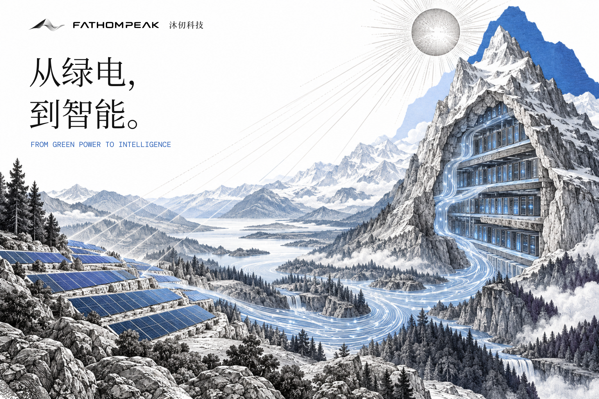
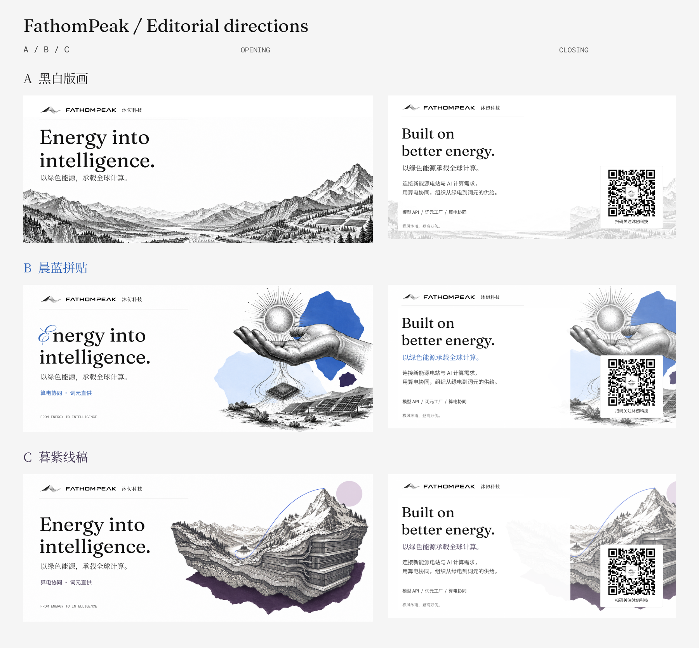

FATHOMPEAK / 品牌介绍排版样张
从一座电站，到一张算网
AI 应用真正需要的，不只是一次模型调用，而是能够持续进入业务流程的计算服务。
一次计算的完成，依赖设备、电力与网络。把这些条件放在一起考虑，才能让任务在合适的位置运行，并完成交付。
以绿色能源承载全球计算。
沐仞科技围绕算电协同，推进电站侧的词元生产、面向开发者与企业的模型服务，以及分布式资源的协同调度。
页眉加入确认版黑白灰峰面图形，配套原版字标。标题使用 Fraunces／思源宋体，正文使用 DM Sans／思源黑体，标签使用 DM Mono；B 方向增加 Pinyon Script 花体首字母。插画由内置 ImageGen 原创生成，按品牌字体独立排版。
下载全部 PNG / SVG「从绿电，到智能」主题海报放在固定品牌横幅下方。用电站、山谷和计算设施组成完整场景，承担文章主题表达；开头横幅负责品牌识别，结尾卡负责介绍与关注入口。


用山谷、河流与电路之间的转化连接品牌含义。纯黑白灰，最适合作为长期固定的文章开头。
手、太阳与芯片组成编辑插画，晨蓝色片点缀，花体首字母与 Fraunces 混排。更接近 Every 的版画拼贴气质。
把山峰、深谷和计算层叠在同一剖面里，让 Fathom 的深度与 Peak 的高度产生关系。暮紫作底部色片，晨蓝细线连接谷底与峰顶。
分成两套用途：Logo 的中性色负责标识与金属层次；既有的晨蓝、暮紫负责编辑版面、插画和强调信息。二者并存，Logo 本身继续保持黑白灰。
直接取自确认版 Logo。五组曲面渐变的全部色标与坐标已存入主色卡 JSON。
晨蓝与暮紫来自现有品牌色卡。文字、色块的排版色值固定；生成插画的印刷纹理会产生自然色阶。
查看主素材站更新后的色卡 →Energy into intelligence.
以绿色能源承载全球计算。
Connecting energy and computation.
连接新能源电站与 AI 计算需求。
ENERGY / COMPUTE / INTELLIGENCE
PNG 按真实字体字形生成，避免系统替代。可编辑 SVG 内嵌字体；转曲 SVG 的文字为路径。主视觉仍是嵌入位图。中文字体为本套文案子集，增改其他汉字时需要补充完整字体。
16px 正文、1.9 倍行高，左对齐、少量二级标题，避免连续卡片和装饰线框。
AI 应用真正需要的，不只是一次模型调用，而是能够持续进入业务流程的计算服务。
一次计算的完成，依赖设备、电力与网络。把这些条件放在一起考虑，才能让任务在合适的位置运行，并完成交付。
以绿色能源承载全球计算。
沐仞科技围绕算电协同，推进电站侧的词元生产、面向开发者与企业的模型服务，以及分布式资源的协同调度。
REFERENCE · Every / 制作与字体说明 / ImageGen 提示词